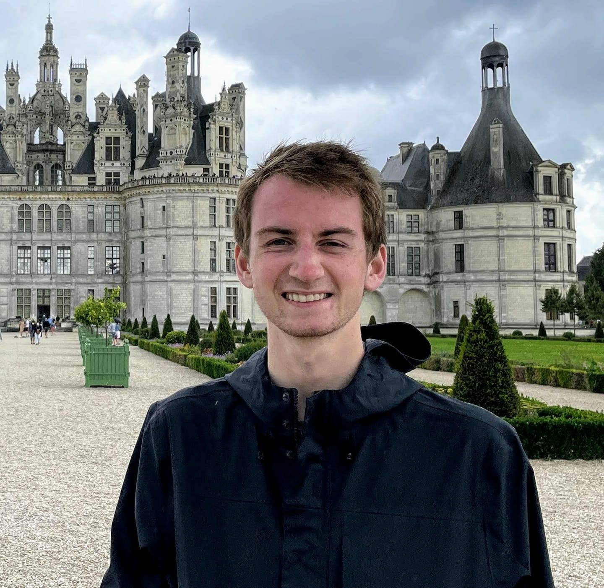

Background
Hey everyone! I'm Jackson Hicken. I was born in Pennsylvania and grew up in Portland, Oregon. I'm currently a sophomore at BYU studying statistics. When I'm not busy with school, I enjoy running, reading, and pretty much anything outdoors. Thanks for taking a minute to check out my website.
Resume
Education
-
Brigham Young Univeristy
- 2018-present, 2024 planned graduation
- Major: Statistics (Data Science)
- Minor: Business
-
Valley Catholic High School
- 2014-2018
- Visit the school website here
Experience
-
Kobi Tools
- Summer 2021
- Sherwood, Oregon
- Warehouse Assistant
-
The Church of Jesus Christ of Latter-day Saints
- Summer 2019 - Summer 2021
- Paris, France
- Full-time Missionary
-
CYO Portland
- Spring 2018
- Beaverton, Oregon
- Timing mananger and Data Recorder
-
Medical Teams International
- Summer 2017
- Tigard, Oregon
- Volunteer
Skills
-
Excel
- Data Analysis
- Solver
- VBA
-
R
- ANOVA for CR, CB, LS, SP/RM designs
- Power analysis
- Data visualization
-
Other basic skills
- SQL
- Tableau
- HTML, CSS
Contact Information
- jhicken7@gmail.com